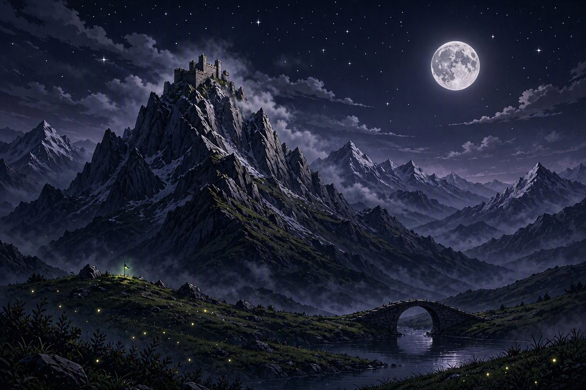

Chapter V - The Ascent

The Shadowpeak Mountains rise before you like the jagged teeth of some ancient, slumbering giant. At their summit, barely visible through the perpetual storm clouds, stands the Fortress of Malachar — a monument to darkness carved into the living rock.
Your supplies are secured. Your resolve is iron. But the mountain itself is the Superlord's first line of defense — a natural fortress that has claimed the lives of countless would-be heroes.
Three routes present themselves. The main path is wide and relatively clear — but it's almost certainly watched and trapped. A hidden trail winds along the cliff face, barely visible through the mist. And a rope bridge spans a deadly chasm, swaying ominously in the howling wind.
Each path is a gamble. Choose with your head, not just your heart.
Which route do you take?